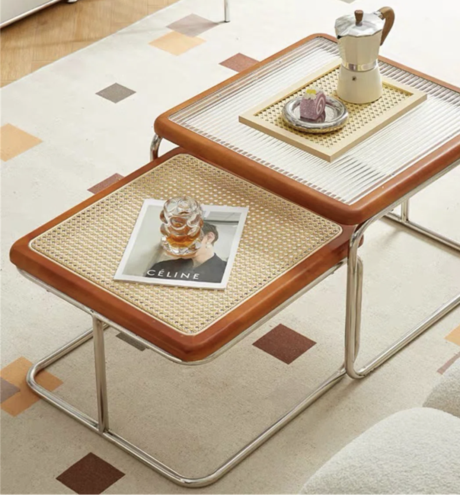

The possibilities for innovation are not, by any means, exhausted. Technological development is always offering new opportunities for innovative design. But innovative design always develops in tandem with innovative technology, and can never be an end in itself.
A product is bought to be used. It has to satisfy certain criteria, not only functional, but also psychological and aesthetic. Good design emphasizes the usefulness of a product whilst disregarding anything that could possibly detract from it.
The aesthetic quality of a product is integral to its usefulness because products we use every day affect our person and our well-being. But only well-executed objects can be beautiful.
It clarifies the product's structure. Better still, it can make the product talk. At best, it is self-explanatory.
Products fulfilling a purpose are like tools. They are neither decorative objects nor works of art. Their design should therefore be both neutral and restrained, to leave room for the user's self-expression.
It does not make a product more innovative, powerful or valuable than it really is. It does not attempt to manipulate the consumer with promises that cannot be kept.
It avoids being fashionable and therefore never appears antiquated. Unlike fashionable design, it lasts many years - even in today's throwaway society.
Nothing must be arbitrary or left to chance. Care and accuracy in the design process show respect towards the user.
Design makes an important contribution to the preservation of the environment. It conserves resources and minimizes physical and visual pollution throughout the lifecycle of the product.
Less, but better - because it concentrates on the essential aspects, and the products are not burdened with non-essentials.